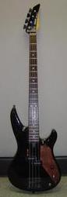

|
 |
This black
Yamaha RBX300 was my first bass. I paid $200-250 new for it in
1990 (all prices in Canadian dollars). It is very light and has an excellent balance. The
construction is exceptional for the
price. Usually at this price the body is just a slab, but
the RBX300 has tummy and forearm contours plus scallops in
the horns. Overall, a very '80s metal look, especially with
the pointed bi-level headstock.
I have probably put more than $300 into hardware upgrades over the years. One of the first things to go where the cheap pickups. I replaced them with Seymour Duncan Quarter-Pound® for P-Bass pickups. The quarter pound is so named for its ¼" wide pole pieces. This pickup really beefed up the sound. I decided to replace the cheap chrome hardware with black hardware. I purchased a Wilkinson bridge and locking Sperzel tuners. These tuners allow for very fast string changes. You just thread the string through, tighten the lock, and tune it up. However, the tuners where much smaller than the originals. I bought a dowel, glued it into the headstock holes and then re-drilled smaller holes. You can see a closeup of a tuner in this image. I also added Dunlop strap locks at the same time. Never leave home without them! During the '90s, I got interested in leather work. I decided to "customize" my bass with a leather pickguard and a leather thumbrest. The original bass did not have a pickguard, it is rear routed. The thumbrest was made by wetting a piece of leather and then folding it in half. Once it dried, it stayed in the folded shape. In this body closeup you can see that the thumb rest has molded a bit to my thumb. It is very comfortable and the low height keeps it out of the way. The pictures show the original top mounted jack. I actually drilled a hole and put in a side mounted jack years ago. I filled the original hole with a dummy pot. I recently (early 2004) thought the side jack might be causing amp hum and changed it back. I plan to put the side jack back when I have time.... Along the way most of the electronics where changed including the cap and all the wiring. Most of this work was to better shield the bass. I also replaced the nut since the original was cut too low. So what is still original?
| |||||||||||||
| ||||||||||||||
Back to Bass
Contact Sean MacLennan